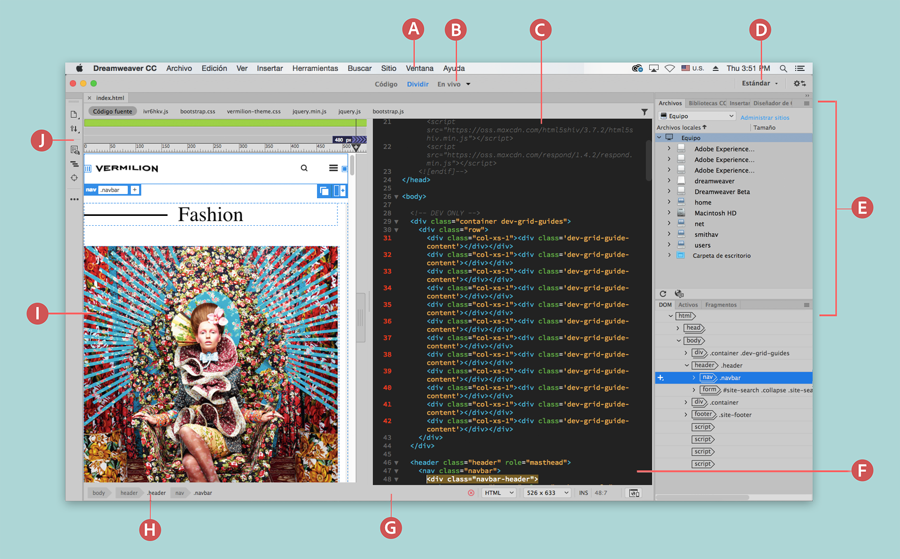

El espacio de trabajo de Dreamweaver permite ver las propiedades de los documentos y los objetos. Además, coloca muchas de las operaciones más frecuentes en barras de herramientas para que pueda realizar cambios en los documentos rápidamente.
A. Barra de aplicaciones B. Barra de herramientas Documento C. Ventana Documento D. Conmutador de espacios de trabajo E. Paneles F. Vista de código G. Barra de estado H. Selector de etiquetas I. Vista en vivo J. Barra de herramientas
Descripción general de los elementos del espacio de trabajoBarra de la aplicación Se encuentra a lo largo de la parte superior de la ventana de la aplicación y contiene un conmutador de espacios de trabajo, menús (solo Windows) y otros controles de la aplicación. Barra de herramientas Documento Contiene botones con opciones para las diferentes vistas de la ventana Documento (como la vista Diseño, la vista en vivo y la vista Código). Barra de herramientas Estándar Para mostrar la barra de herramientas Estándar, seleccione Ventana > Barras de herramientas > Estándar. La barra de herramientas contiene botones para realizar las operaciones más habituales de los menús Archivo y Edición: Nuevo, Abrir, Guardar, Guardar todo, Imprimir código, Cortar, Copiar, Pegar, Deshacer y Rehacer. Barra de herramientas Se encuentra en la parte izquierda de la ventana de la aplicación y contiene botones específicos para cada vista.
Ventana Documento Muestra el documento actual mientras lo está creando y editando. Inspector de propiedades Le permite ver y cambiar diversas propiedades del objeto o texto seleccionado. Cada objeto tiene varias propiedades. Selector de etiquetas Situado en la barra de estado de la parte inferior de la ventana Documento. Muestra la jerarquía de etiquetas que rodea a la selección actual. Haga clic en cualquier etiqueta de la jerarquía para seleccionar la etiqueta y todo su contenido. Paneles Le ayudan a supervisar y modificar el trabajo realizado. Son ejemplos de paneles el panel Insertar, el panel Diseñador de CSS y el panel Archivos. Para ampliar un panel, haga doble clic en su ficha. El panel Extract Permite cargar y ver sus archivos PSD en Creative Cloud. Con este panel, puede extraer CSS, texto, imágenes, fuentes, colores, degradados y medidas de las composiciones PSD en su documento. Panel Insertar Contiene botones para la inserción de diversos tipos de objeto, como imágenes, tablas y elementos multimedia, en un documento. Cada objeto es un fragmento de código HTML que le permite establecer diversos atributos al insertarlo. Por ejemplo, puede insertar una tabla haciendo clic en el botón Tabla del panel Insertar. Si lo prefiere, puede insertar objetos utilizando el menú Insertar en lugar del panel Insertar.
Panel Archivos Le permite administrar los archivos y las carpetas, tanto si forman parte de un sitio de Dreamweaver como si se encuentran en un servidor remoto. El panel Archivos también permite acceder a todos los archivos almacenados en el disco local. Para obtener más información, consulte Administración de archivos y carpetas. Panel Fragmentos Permite guardar y reutilizar los fragmentos de código en distintos sitios web, sitios e instalaciones de Dreamweaver (con la configuración de sincronización). Para obtener más información, consulte Reutilización de código con fragmentos. Panel Diseñador de CSS es un inspector de propiedades de CSS que permite crear “visualmente” estilos CSS y archivos, así como definir propiedades y consultas de medios.